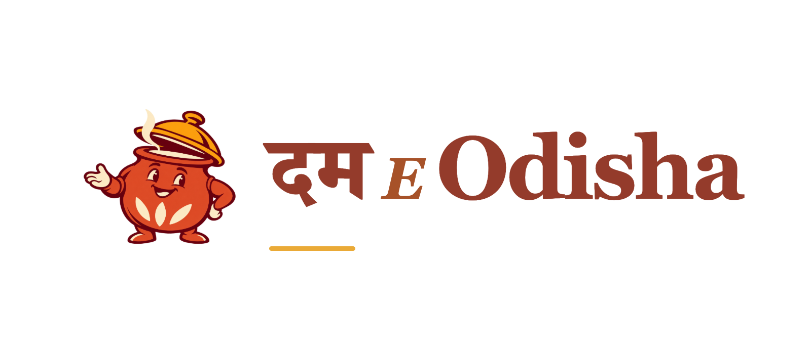
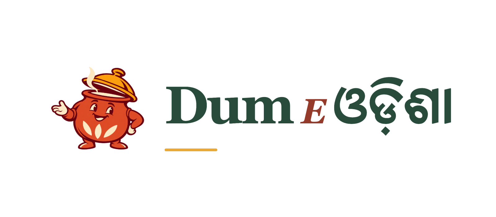

01 / Image only / no lettering
The Handi Host
A welcoming cooking-pot character. Lid, steam, rice and a confident open palm carry the idea without a single letter.
Explore this logo ↗Round 03 / From your latest reference
One purely pictorial logo, then two mixed-script experiments. Choose a card to inspect the idea, compare name positions and download the artwork.
01 / Image only / no lettering
A welcoming cooking-pot character. Lid, steam, rice and a confident open palm carry the idea without a single letter.
Explore this logo ↗
02 / Hindi + English
दम begins the name in Devanagari. English carries E Odisha. Compare initial, middle and final-word experiments.
Explore this logo ↗
03 / English + Odia
Dum E leads into ଓଡ଼ିଶା. A regional-script ending makes the place name the distinctive part of the identity.
Explore this logo ↗The shared thinking
The reference’s isolated birds, animals and confident silhouettes informed the economy of the Handi Host. Its pot, rice and lifted lid bring that approach back to biryani. The two lettering treatments use whole name units in Hindi or Odia, keeping the spoken name Dum E Odisha.
The symbol works alone. Each script page has three placements: initial Dum, middle E, or final Odisha. Primary recommendations are Hindi at the beginning and Odia at the end. A wordmark-only export is also included for each.
The character is generated raster artwork with a hand-inked appearance. The mixed-script name is genuine typeset text. These are review experiments; native-reader approval is pending.